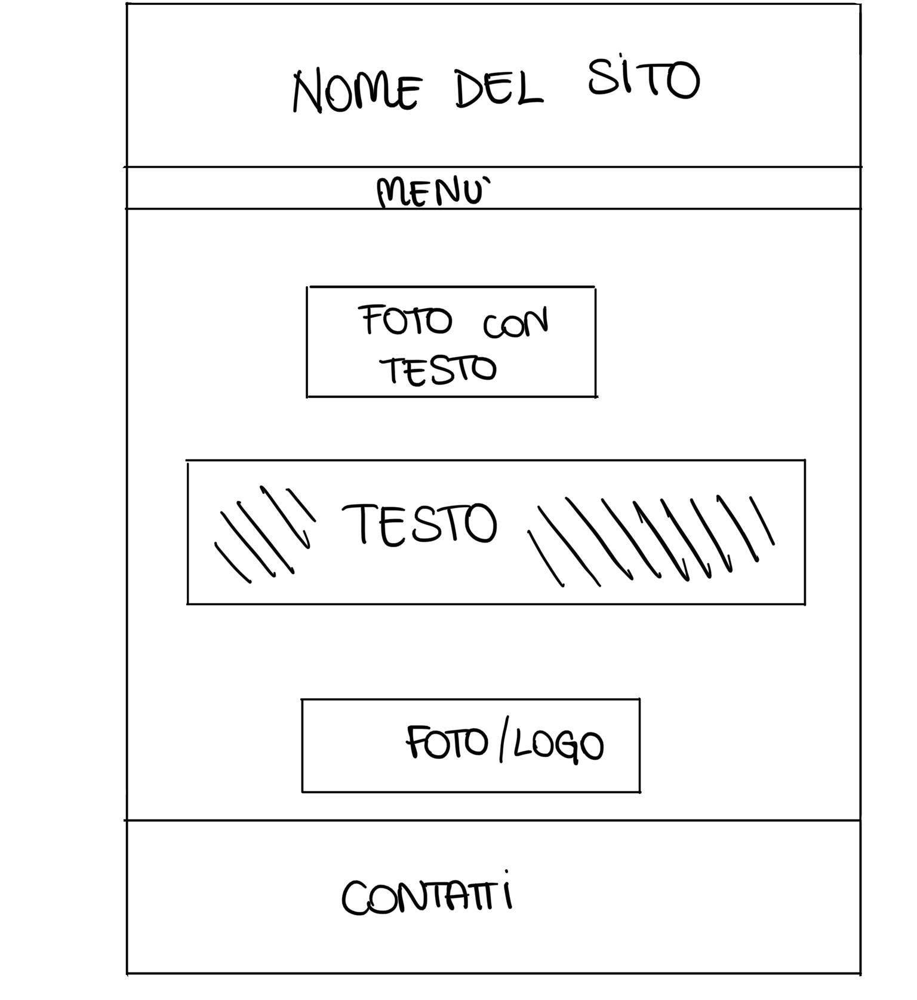
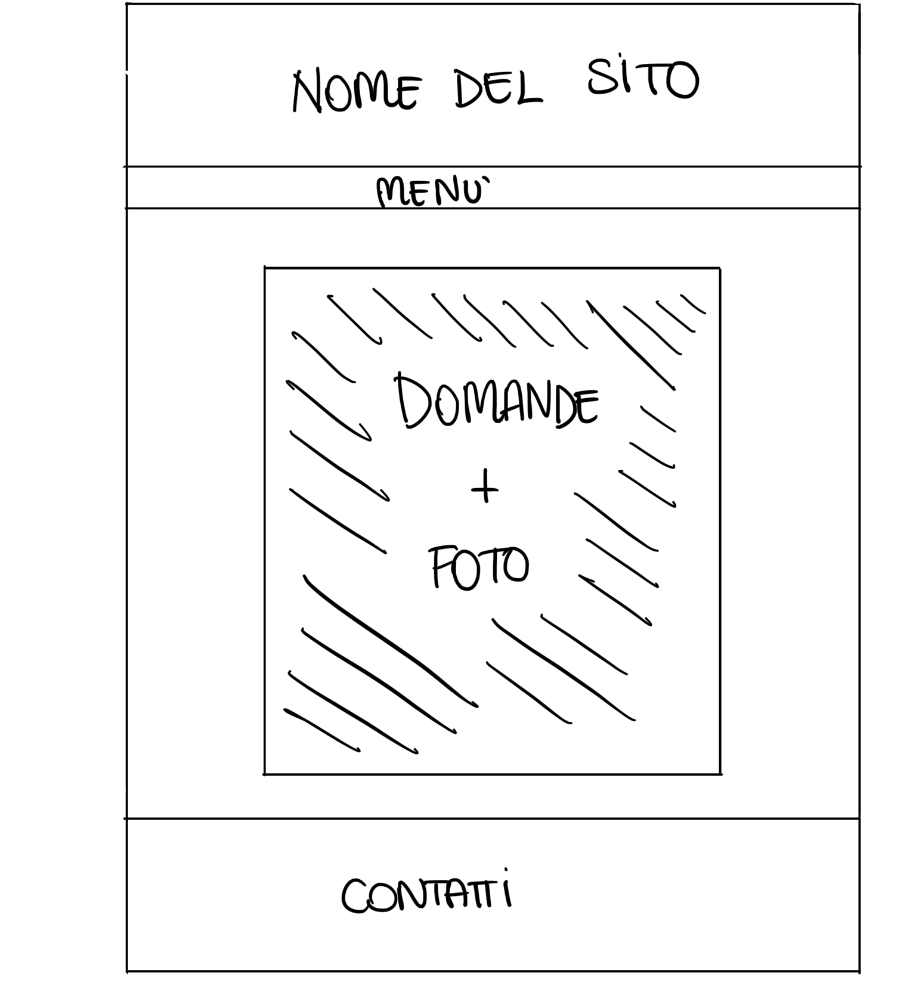
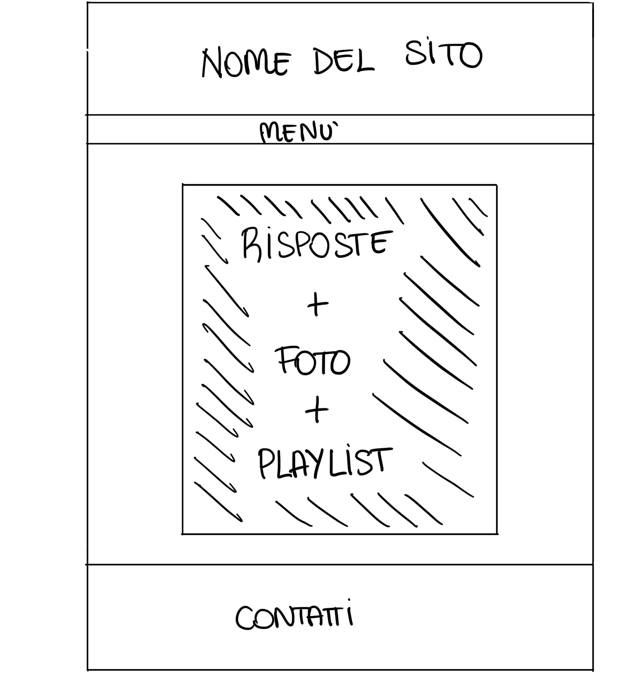
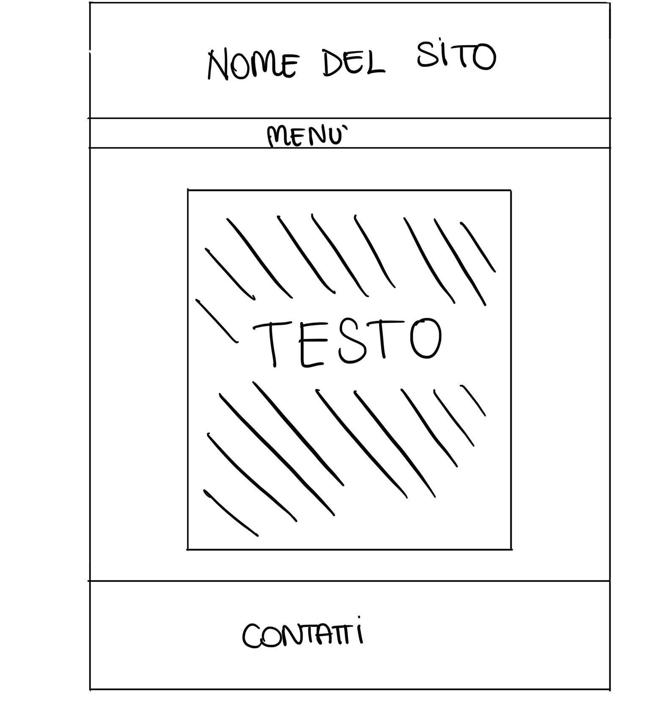

Documentazione
Abstract
ConcerTiAmo nasce con l’idea di creare un sito che renda più facile e immediata l’identificazione delle persone in un genere musicale così che possano poi apprezzare al massimo il concerto a cui parteciperanno. Si propone, inoltre, di aiutare anche i più giovani a ritrovarsi in un genere che li rappresenti. Attraverso una serie di domande, il sito si propone di far riflettere le persone sulle loro preferenze e far sì che esplorino le loro personalità. Una volta completato il quiz e identificata la tipologia di concerto è possibile anche ascoltare un esempio di playlist dei principali esponenti. Le parole chiave del sito sono semplicità e chiarezza.
Benchmarking
Il sito ha come obiettivo quello di risolvere i soliti dubbi che si celano dietro a domande del tipo: “qual è il tuo genere musicale preferito? A quale tipologia di concerto preferisci andare?...” Grazie a questo sito le persone potranno riconoscere il genere musicale che più gli si addice e che meglio li rappresenta. Di conseguenza individuare anche la tipologia di concerto a cui prendere parte in modo divertente e quasi inconsapevole rispondendo semplicemente a una serie di domande.
Target Utente
Il target utente principale è la Generazione Z, ovvero di un’età compresa tra i 13 e i 25 anni. Detto questo, in realtà, il target è piuttosto ampio perché chiunque, dai più giovani agli adulti, può cliccare sul nostro sito, rispondere alle domande e scoprire a quale genere musicale appartiene.
Competitor
I principali competitor analizzati di ConcerTiAmo presentano un sito ben strutturato e chiaro, anch’essi sfruttano una palette di colori tenui per agevolare la lettura all’utente. Porgono una serie di domande a cui corrispondono 4/5 risposte possibili. Una differenza tra ConcerTiAmo e i suoi competitor la si può individuare nella pagina delle risposte, in cui all’utente oltre che la risposta da lui cercata viene presentata anche una playlist collegata a YouTube e attraverso l’ascolto della quale si può immediatamente fare un’idea sul genere musicale in cui viene inserito. Altra differenza rintracciata è che la maggior parte di siti a quiz non si propone di dire a quale tipologia di concerto partecipare, quindi una questione abbastanza impersonale, ma piuttosto si propone di identificare la personalità di uno spettatore, questione ben più intima. Per questo motivo ConcerTiAmo si propone solamente di aiutare le persone a riconoscersi in uno specifico tipo di concerto, qualcosa che già inconsapevolmente risiede dentro di loro. Alcuni esempi di questi competitor sono Daninseries.it e Gingergeneration.it
Struttura e Layout
Architettura del sito
Wireframe
Wireframe home
Wireframe quiz
Wireframe risposte
Wireframe documentazione
Look and feel
Per il nostro sito abbiamo deciso di utilizzare colori pastello, delicati ma ugualmente d’impatto. Nello specifico abbiamo usato quelli proposti da Sublime Text. Il lightpink lo abbiamo scelto per l’header e per il footer. Il lightyellow per il body, per il titolo e per l’icona. Abbiamo utilizzato il black per il testo scritto, il colore deeppink per le frasi in grassetto e per le scritte dei bottoni e per ultimo abbiamo sfruttato anche hotpink per il colore di sfondo dei bottoni. Abbiamo disposto gli elementi nella pagina con l’obiettivo di rendere il sito intuitivo e comprensibile, senza dover compiere sforzi non necessari. Il font scelto è un font serif, ‘Lora’, che rende gradevole e scorrevole la lettura. Nella pagina delle domande, dove possibile, abbiamo aggiunto delle immagini che riproducono visivamente le opzioni proposte.
Linguaggi e strumenti
Linguaggi web:
HTML per i contenuti delle pagine
CSS per la grafica del sito
Strumenti:
Google Fonts per i font
Font Awesome per le icone
Canva per i collage delle immagini
w3school
Sublime Text per scrivere il codice
Github per la pubblicazione del sito
Google Analytics per monitorare il sito
Instagram per la promozione del sito
YouTube per le playlist
Communication strategy
Background
Sebbene i competitor presentino siti molto ordinati e ben strutturati, ConcerTiAmo si propone di aiutare le persone a riconoscersi in uno specifico tipo di concerto, qualcosa che già inconsapevolmente risiede dentro di loro. Cosa che non viene offerta dalla maggior parte dei siti a quiz, che propongono analisi più specifiche e personali.
Obiettivi comunicativi
Come già scritto in precedenza l'obiettivo principale del sito è rendere più chiara l'identificazione di una persona in un genere musicale. Per quanto riguarda l'obiettivo concreto e personale del sito, ci siamo imposte di arrivare almeno a 20 mi piace in un post sulla pagina Instagram aperta e da noi gestita e a 30 seguaci sempre sulla pagina Instagram.
Target Audience:
Il target principale a cui il sito si rivolge è la fascia d’età tra i 13 e i 25 anni. Essendo stati tutti adolescenti, sappiamo quanto ci si senta confusi in ambito musicale, tutto sembra bello ma niente sembra rappresentare pienamente il proprio IO. ConcerTiAmo aiuta le persone, in particolare i giovani, ma accoglie tutte le generazioni. Chiunque abbia bisogno di un aiuto a identificare un genere può rivolgersi a questo sito. Vengono sfruttati i social per avvicinarsi ai giovani, e per rendere più chiara la spiegazione viene proposta anche una playlist per ogni categoria. Viene usato un linguaggio chiaro e diretto, senza uso di termini appartenenti alle nuove generazioni così da rendere il sito un luogo che può visitare chiunque.
Promozione:
Per promuovere al meglio il nostro sito, per quanto riguarda la tecnologia, abbiamo deciso di creare una pagina social (Instagram e Facebook) e di condividere il link su Whatsapp ad amici e parenti. Oltre a questa modalità, abbiamo sfruttato anche il buon vecchio passaparola.
Valutazione dei risultati:
Per la valutazione dei risultati del sito sfrutteremo: Google Analytics per monitorare il numero dei visitatori; su Instagram, invece, controlleremo il numero di like (minimo 20) e il numero dei seguaci (minimo 30). Su Instagram ci sarà la possibilità di riferirci il risultato del quiz tramite la sezione commenti.